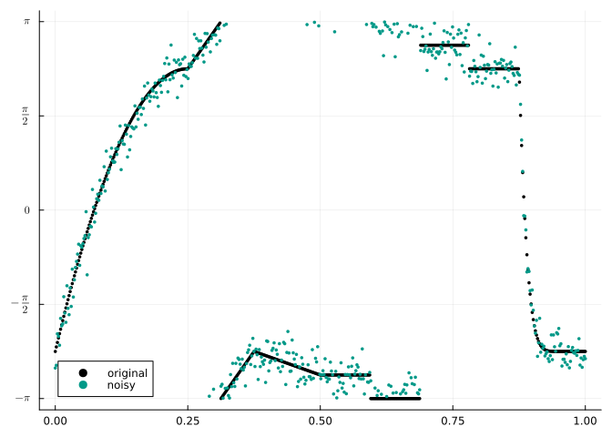
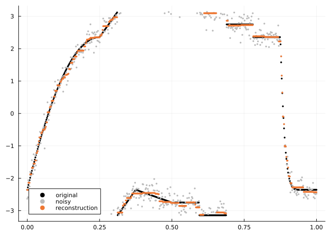

Total Variation Minimization
Ronny Bergmann 2023-06-06
Introduction
Total Variation denoising is an optimization problem used to denoise signals and images. The corresponding (Euclidean) objective is often called Rudin-Osher-Fatemi (ROF) model based on the paper [ROF92].
This was generalized to manifolds in [WDS14]. In this short example we will look at the ROF model for manifold-valued data, its generalizations, and how they can be solved using Manopt.jl.
The manifold-valued ROF model
Generalizing the ROF model to manifolds can be phrased as follows: Given a (discrete) signal on a manifold $s = (s_i)_{i=1}^N \in \mathbb M^n$ of length $n \in \mathbb N$, we usually assume that this signal might be noisy. For the (Euclidean) ROF model we assume that the noise is Gaussian. Then variational models for denoising usually consist of a data term $D(p,s)$ to “stay close to” $s$ and a regularizer $R(p)$. For TV regularization the data term is the squared distance and the regularizer models that without noise, neighboring values are close. We obtain
\[\operatorname*{arg\,min}_{p\in\mathcal M^n} f(p), \qquad f(p) = D(p,s) + α R(p) = \sum_{i=1}^n d_{\mathcal M}^2(s_i,p_i) + α\sum_{i=1}^{n-1} d_{\mathcal M}(p_i,p_{i+1}),\]
where $α > 0$ is a weight parameter.
The challenge here is that most classical algorithm, like gradient descent or Quasi Newton, assume the cost $f(p)$ to be smooth such that the gradient exists at every point. In our setting that is not the case since the distacen is not differentiable for any $p_i=p_{i+1}$. So we have to use another technique.
The Cyclic Proximal Point algorithm
If the cost consists of a sum of functions, where each of the proximal maps is “easy to evaluate”, for best of cases in closed form, we can “apply the proximal maps in a cyclic fashion” and optain the Cyclic Proximal Point Algorithm [Bac14].
Both for the distance and the squared distance, we have generic implementations; since this happens in a cyclic manner, there is also always one of the arguments involved in the prox and never both. We can improve the performance slightly by computing all proes in parallel that do not interfer. To be precise we can compute first all proxes of distances in the regularizer that start with an odd index in parallel. Afterwards all that start with an even index.
The Optimsation
using Manifolds, Manopt, ManoptExamples, ManifoldDiff
using ManifoldDiff: prox_distance
using ManoptExamples: prox_Total_Variation
n = 500 #Signal length
σ = 0.2 # amount of noise
α = 0.5# in the TV modelWe define a few colors
using Colors, NamedColors, ColorSchemes, Plots, Random
data_color = RGBA{Float64}(colorant"black")
light_color = RGBA{Float64}(colorant"brightgrey")
recon_color = RGBA{Float64}(colorant"vibrantorange")
noisy_color = RGBA{Float64}(colorant"vibrantteal")And we generate our data on the Circle, since that is easy to plot and nice to compare to the Euclidean case of a real-valued signal.
Random.seed!(23)
M = Circle()
N = PowerManifold(M, n)
data = ManoptExamples.artificial_S1_signal(n)
s = [exp(M, d, rand(M; vector_at=d, σ=0.2)) for d in data]
t = range(0.0, 1.0; length=n)
scene = scatter(
t,
data;
markercolor=data_color,
markerstrokecolor=data_color,
markersize=2,
lab="original",
)
scatter!(
scene,
t,
s;
markersize=2,
markercolor=noisy_color,
markerstrokecolor=noisy_color,
lab="noisy",
)
yticks!(
[-π, -π / 2, 0, π / 2, π],
[raw"$-\pi$", raw"$-\frac{\pi}{2}$", raw"$0$", raw"$\frac{\pi}{2}$", raw"$\pi$"],
)
As mentioned above, total variation now minimized different neighbors – while keeping jumps if the are large enough. One notable difference between Euclidean and Cyclic data is, that the y-axis is in our case periodic, hence the first jump is actually not a jump but a “linear increase” that “wraps around” and the second large jump –or third overall– is actually only as small as the second jump.
Defining cost and the proximal maps, which are actually 3 proxes to be precise.
f(N, p) = ManoptExamples.L2_Total_Variation(N, s, α, p)
proxes_f = ((N, λ, p) -> prox_distance(N, λ, s, p, 2), (N, λ, p) -> prox_Total_Variation(N, α * λ, p))We run the algorithm
o = cyclic_proximal_point(
N,
f,
proxes_f,
s;
λ=i -> π / (2 * i),
debug=[
:Iteration,
" | ",
DebugProximalParameter(),
" | ",
:Cost,
" | ",
:Change,
"\n",
1000,
:Stop,
],
record=[:Iteration, :Cost, :Change, :Iterate],
return_state=true,
);Initial | | f(x): 59.187445 |
# 1000 | λ:0.0015707963267948967 | f(x): 13.963912 | Last Change: 1.773283
# 2000 | λ:0.0007853981633974483 | f(x): 13.947124 | Last Change: 0.011678
# 3000 | λ:0.0005235987755982988 | f(x): 13.941538 | Last Change: 0.003907
# 4000 | λ:0.00039269908169872416 | f(x): 13.938748 | Last Change: 0.001957
# 5000 | λ:0.0003141592653589793 | f(x): 13.937075 | Last Change: 0.001175
The algorithm reached its maximal number of iterations (5000).We can see that the cost reduces nicely. Let’s extract the result an the recorded values
recon = get_solver_result(o)
record = get_record(o)We get
scene = scatter(
t,
data;
markercolor=data_color,
markerstrokecolor=data_color,
markersize=2,
lab="original",
)
scatter!(
scene,
t,
s;
markersize=2,
markercolor=light_color,
markerstrokecolor=light_color,
lab="noisy",
)
scatter!(
scene,
t,
recon;
markersize=2,
markercolor=recon_color,
markerstrokecolor=recon_color,
lab="reconstruction",
)
Which contains the usual stair casing one expects for TV regularization, but here in a “cyclic manner”
Outlook
We can generalize the total variation also to a second order total variation. Again intuitively, while TV prefers constant areas, the $\operatorname{TV}_2$ yields a cost 0 for anything linear, which on manifolds can be generalized to equidistant on a geodesic [BBSW16]. Here we can again derive proximal maps, which for the circle again have a closed form solutoin [BLSW14] but on general manifolds these have again to be approximated.
Another extension for both first and second order TV is to apply this for manifold-valued images $S = (S_{i,j})_{i,j=1}^{m,n} \in \mathcal M^{m,n}$, where the distances in the regularizer are then used in both the first dimension $i$ and the second dimension $j$ in the data.
Technical details
This version of the example was generated with the following package versions.
Pkg.status()Status `~/work/ManoptExamples.jl/ManoptExamples.jl/examples/Project.toml`
[6e4b80f9] BenchmarkTools v1.5.0
[35d6a980] ColorSchemes v3.26.0
[5ae59095] Colors v0.12.11
[7073ff75] IJulia v1.25.0
[8ac3fa9e] LRUCache v1.6.1
[d3d80556] LineSearches v7.3.0
[af67fdf4] ManifoldDiff v0.3.12
⌃ [1cead3c2] Manifolds v0.9.20
[3362f125] ManifoldsBase v0.15.17
⌅ [0fc0a36d] Manopt v0.4.69
[5b8d5e80] ManoptExamples v0.1.10 `..`
[51fcb6bd] NamedColors v0.2.2
[91a5bcdd] Plots v1.40.8
[08abe8d2] PrettyTables v2.4.0
[6099a3de] PythonCall v0.9.23
Info Packages marked with ⌃ and ⌅ have new versions available. Those with ⌃ may be upgradable, but those with ⌅ are restricted by compatibility constraints from upgrading. To see why use `status --outdated`Literature
- [Bac14]
- M. Bačák. Computing medians and means in Hadamard spaces. SIAM Journal on Optimization 24, 1542–1566 (2014), arXiv:1210.2145.
- [BBSW16]
- M. Bačák, R. Bergmann, G. Steidl and A. Weinmann. A second order non-smooth variational model for restoring manifold-valued images. SIAM Journal on Scientific Computing 38, A567–A597 (2016), arXiv:1506.02409.
- [BLSW14]
- R. Bergmann, F. Laus, G. Steidl and A. Weinmann. Second order differences of cyclic data and applications in variational denoising. SIAM Journal on Imaging Sciences 7, 2916–2953 (2014), arXiv:1405.5349.
- [ROF92]
- L. I. Rudin, S. Osher and E. Fatemi. Nonlinear total variation based noise removal algorithms. Physica D: Nonlinear Phenomena 60, 259–268 (1992).
- [WDS14]
- A. Weinmann, L. Demaret and M. Storath. Total variation regularization for manifold-valued data. SIAM Journal on Imaging Sciences 7, 2226–2257 (2014).